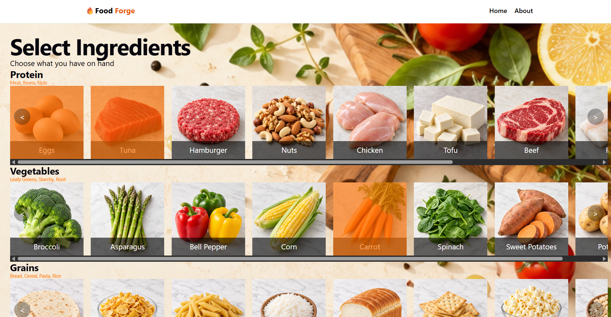
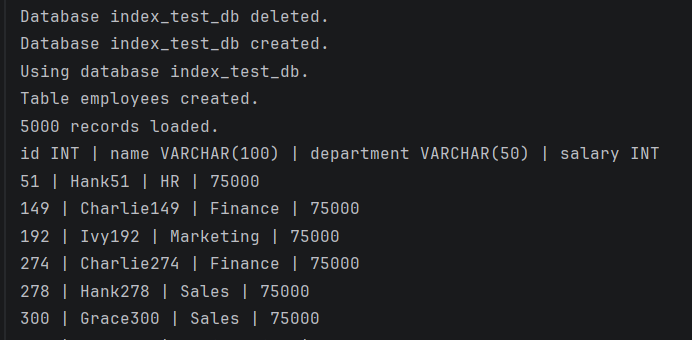
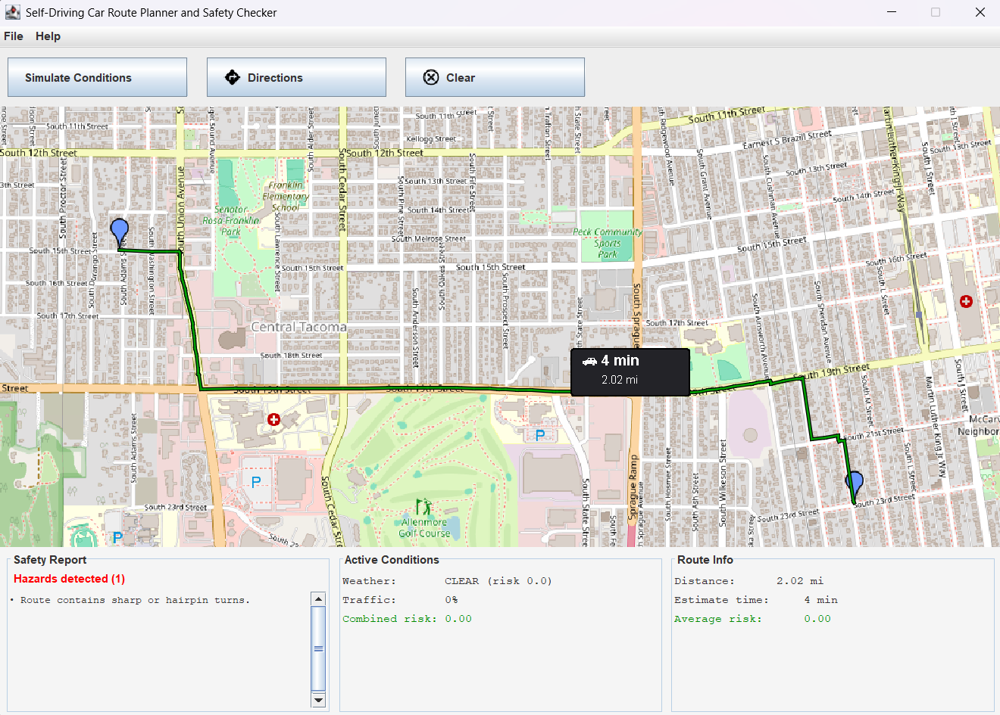

HELLO, I'M
Finding patterns, solving problems, and making a meaningful impact.
I'm a Computer Science student at the University of Washington Tacoma who enjoys solving problems, identifying patterns, and using data to better understand complex issues. I'm particularly interested in data analytics and understanding why outcomes occur, whether in human behavior, complex systems, or real-world challenges.
View ProjectsI am currently pursuing a Bachelor's degree in Computer Science with a minor in Business Data Analytics at the University of Washington Tacoma. I have a strong interest in data analytics and problem-solving. What motivates me most is the process of uncovering patterns, understanding complex problems, and using information to make better decisions.
My interest in analytics comes from a natural curiosity about patterns, decision-making, and understanding why outcomes occur. Whether examining data, human behavior, or complex systems, I enjoy identifying connections and using evidence to better understand problems.
Beyond technology, I have a long-standing interest in mental health, personal growth, and understanding human behavior. Over the years, I have spent significant time learning about mental health, self-improvement, and the factors that contribute to positive outcomes in people's lives. This interest has strengthened my analytical thinking and my desire to use information to help others.
In the future, I hope to apply my analytical skills in work that creates a positive impact. I am particularly interested in opportunities where data can be used to support public safety, investigations, community well-being, or other efforts that improve outcomes for individuals and society.
Outside of academics, I enjoy crocheting, knitting, and continually challenging myself to learn new skills and technologies.
The projects below represent coursework and technical experience developed throughout my studies at the University of Washington Tacoma. This section will continue to grow as I complete additional analytics-focused projects and expand my technical skills.

FoodForge is a recipe recommendation and generation application designed to help users find recipes based on available ingredients, dietary preferences, and nutritional goals. Matching recipes are retrieved from a database, and when no suitable recipe exists, an AI service can generate a custom recipe.
Technologies: React, Node.js, Express, SQL
Current Challenge: Designing a relational database structure that efficiently connects recipes, ingredients, user preferences, and generated content.
Current Focus: Database design, application architecture, and integrating frontend and backend functionality.

A completed Java project that simulates core SQL database functionality including creating tables, inserting records, updating data, deleting records, and executing SQL-style queries.
Technologies: Java, Object-Oriented Programming, File I/O
Challenge: Separating command parsing from database operations while creating a modular and maintainable application structure.
Key Learnings: Database concepts, parser design, software architecture, defensive programming, and modular code organization.

A completed quarter-long team project developed as part of a software engineering course. Team members collaborated throughout the design, development, testing, and documentation phases of the project while following established software engineering practices.
Technologies: Java, Git, GitHub
Challenge: Coordinating requirements, development tasks, and communication across multiple team members while maintaining project consistency.
Key Learnings: Team collaboration, project planning, version control, software development lifecycle practices, and communication within a development team.
Database Systems & Design, Software Engineering, Data Structures & Algorithms, Computer Architecture, Business Data Analytics
Completed coursework projects involving database design, software engineering, full-stack application development, and systems analysis. Worked both independently and in collaborative team environments to design and implement technical solutions.
Through previous employment, I have developed strong communication, customer service, teamwork, and problem-solving skills. These experiences strengthened my ability to work effectively with others, adapt to challenges, and maintain responsibility in fast-paced environments.
For additional information about my education, technical skills, project experience, and professional background, please view my resume below.
View Resume📧 abigail.hinds@outlook.com
💻 github.com/abigailhinds
🔗 linkedin.com/in/abigailhinds
I'm always interested in opportunities to learn, solve problems, and explore how data can be used to better understand complex issues and create meaningful impact.